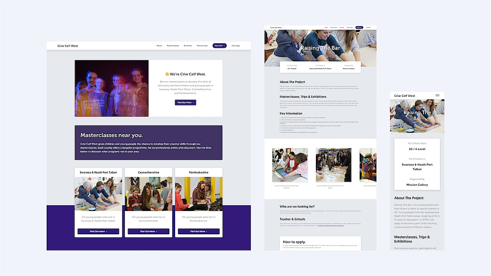

Matthew Otten
Hello, I am a Senior Designer specialising in UI/UX design, brand design and graphic communication. Based in South Wales.
Email MeLinkedInFeatured Projects
Here are a few select projects, please email hello@matthewotten.co.uk to request my full portfolio.
-

Branding for Flow, a Wales/Pakistan art project, led by Mission Gallery. -

Website design for sculptor Sarah Tombs. -

Publication design for the Cross Pollination exhibition at the National Botanic Gardens of Wales. -
 Website design for the Criw Celf West project. -

Publication design for These Waters Have Stories To Tell, part of Ephemeral Coast.